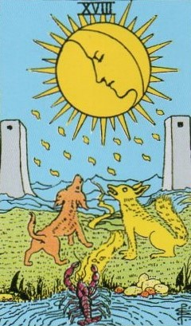
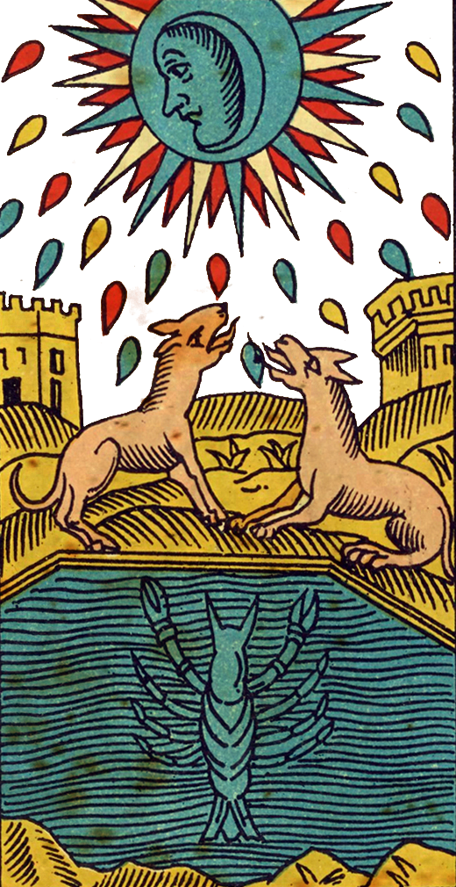
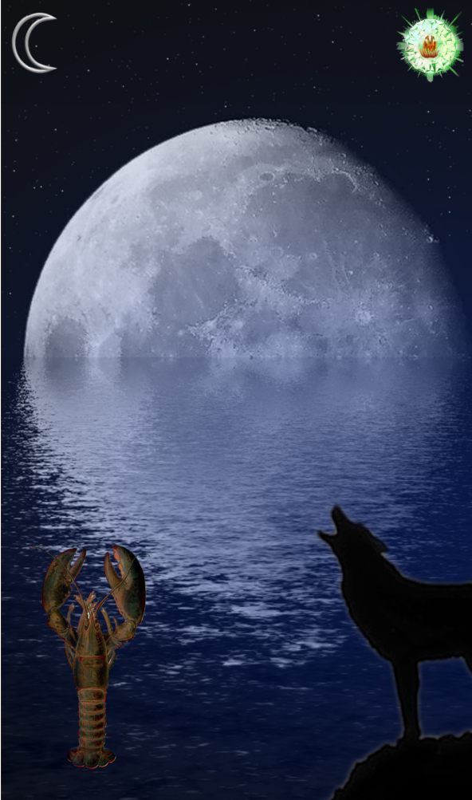
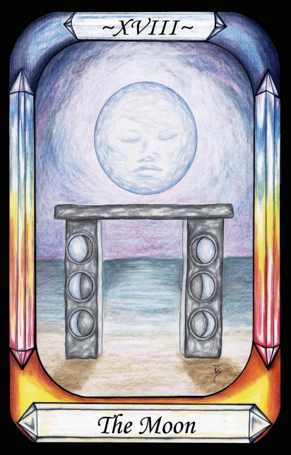
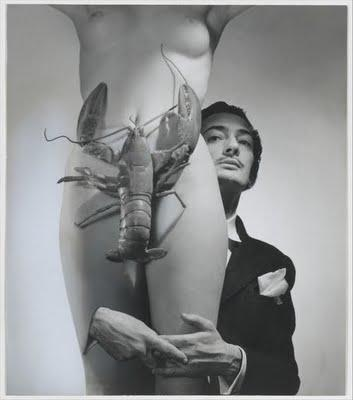

The Moon




Representation |
|
Meaning |
The waxing and waning of the Moon, and its link to the female menstrual cycle. Inconstancy. |
Opposite card |
The High Priestess, who knows how to manage the effects of the Moon. |
Function |
The Moon is Luna, and the card represents her oscillation between extremes, her reflection of the Sun, her affiliation with Water through tides, and her effect on nature.
[P13] …The Demiurge made the seven planetary Governors from the elements of nature. These seven encompass the entire world that is perceived by the senses, and their rule is called Fate.
RWS Imagery
The Moon card shows a Moon (Luna) of mixed phase - both full and nearly new at once - shining down via rays and Yods on a path, dog, wolf, crayfish and Water. The path goes between two watchtowers on either side of the card.
Interpretation of RWS Imagery
The two pillars main the Waite deck may represent two extremes between which she varies, and hence the concept of polarities. The Water is the oceans and their tides, caused by and synchronised to the Moon. Dogs, wolves or jackals are known for their howling at the full Moon, whether wild or domesticated. The Lobster seems to represent the reproductive system of a woman, at least according to Salvadore Dali.

Figure 26 - Photo by Salvador Dali,
indicating the Lobster as a metaphor for the female reproductive system.
The Lobster tail corresponds to the vagina, and the claws follow the position of the ovaries. When a crab is shown, that would indicate that the Moon rules Cancer. Crayfish molt their shells on a Lunar cycle.
Discussion
The Moon refers to oscillation in the sensible world. One of the seven basic laws of Hermetic magic states that all things oscillate. This can be taken to be the influence of the Luna Governor.
The Moon controls many factors, but is most closely linked with menstrual cycles in women, and so is considered to be closely associated with women's mysteries.
It also governs the spawning behaviour of many creatures, such as coral polyps, and crayfish. Wolves and their tame cousins are agitated at full Moon, as are many people. It governs tides, and one of the biorhythm cycles is basically synchronous with it.